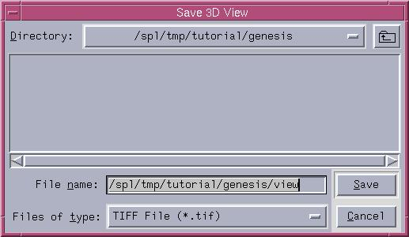

You can save the 3D View and the Active Slice as TIFF files.
Note that the Active Slice is the one that you clicked on last.
To save the 3D View:
- Click File. A drop-down menu appears.

- There are two ways to save the 3D View,
depending on your preferences for file name.
- To save the file with the default file name,
select Save 3D View.
- To use another file name,
select Save 3D View As and enter your own file name for the 3D View.

To save the Active Slice:
- Click File. A drop-down menu appears.
- There are two ways to save the Active Slice,
depending on your preferences for file name.
- To save the file with the default file name,
select Save Active Slice.
- To use another file name,
select Save Active Slice As and enter your own file name for the Active Slice.